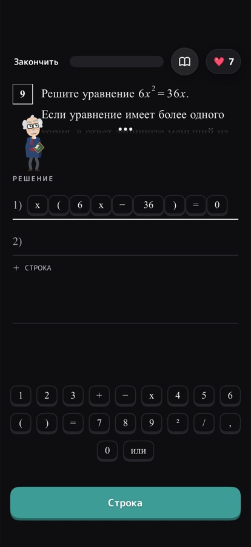
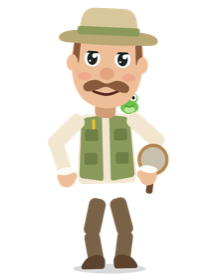
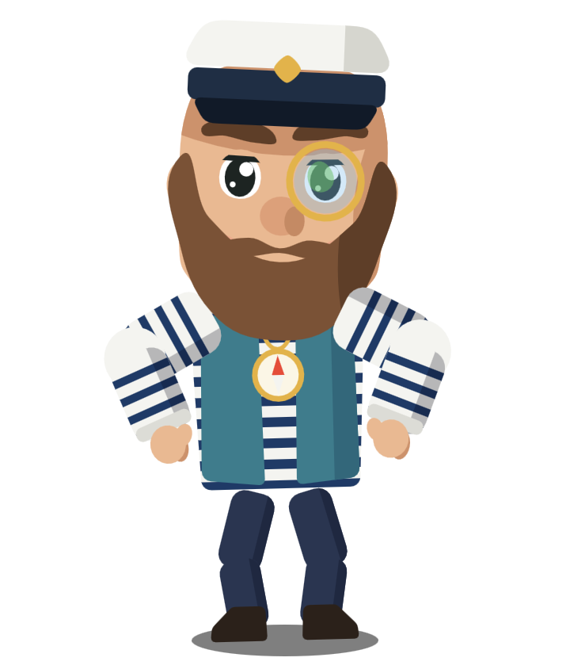
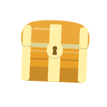
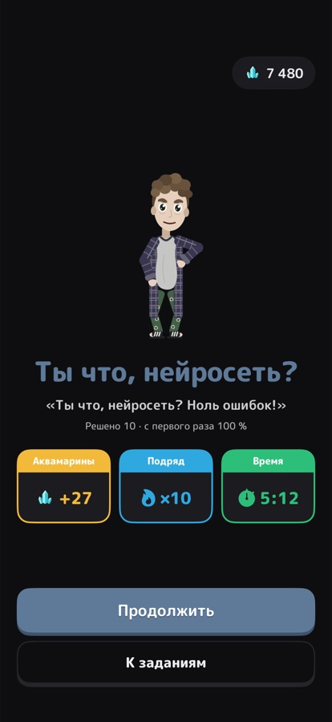

Подготовка к ОГЭ на iPhone
ОГЭ — спокойно
и без скуки.
GoFi превращает подготовку в короткие уроки: задания открытого банка ФИПИ, свой учитель-персонаж у каждого предмета и разбор каждого решения.

Как на экзамене
Задание 9. Уравнение
Решение собирается из плиток
Около 12 тысяч заданий открытого банка ФИПИ выглядят как в настоящем КИМ: номер в рамке, формулы, таблицы. Ответ не печатается, а собирается из плиток. Уравнения решаются по строкам, и каждая строка проверяется сразу.
Команда GoFi
Свой учитель у каждого предмета


Учителя с характером
Медведь Миша строго следит за запятыми, Профессор Икс считает быстрее калькулятора, Доктор Вольт роняет всё «проверить гравитацию». Учителя радуются правильным ответам, сочувствуют ошибкам и разбирают решение вместе с тобой.
Итог урока
Урок пройден!


Учёба, которую хочется продолжать
Серия дней, аквамарины за решённые задания и сундуки, которые выпадают прямо по ходу урока. Короткие уроки без давления и навязчивых целей — просто приходи каждый день.

Короткие уроки в своём темпе
Выбирай номер КИМ и решай столько, сколько успеваешь: по дороге в школу или перед сном. Разбор открывается после ответа, ошибочные задания возвращаются в конце урока. Аудирование по английскому — с озвученными ролями и паузами как на экзамене.
Безопасность
Бережём твои данные
Минимум данных
Собираем только то, что нужно для учёбы.
Без слежки
Никаких рекламных трекеров и продажи данных.
Защищённо
Только защищённые соединения и проверенные сервисы.
Для школьников
Без тёмных приёмов и давления на детей.
Учись спокойно
GoFi сделан для школьников, поэтому мы относимся к данным серьёзно: ничего лишнего, никакой продажи данных и рекламной слежки. Подробно — в политике конфиденциальности.
✓ Без трекеров · Без продажи данных · Для школьниковЧастые вопросы
Это бесплатно?
Да. Все задания и возможности бесплатны, покупок за деньги в приложении нет.
Откуда задания?
Из открытого банка заданий ФИПИ — тех же, что используются при составлении ОГЭ. Мы проверили ответы и написали разборы. GoFi не связан с ФИПИ.
Какие предметы есть?
Все десять предметов ОГЭ: математика, русский язык, информатика, физика, химия, биология, английский, история, обществознание и география.
На каких устройствах работает?
На iPhone с iOS 17 и новее.